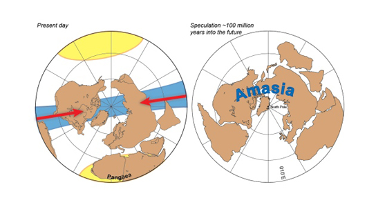

Asia and America Will Collide in Millions of Years to Form Supercontinent Amasia
In the next 50 to 200 million years, all of Earth’s continents will be once again pushed together into a Amasia, a single landmass around the North Pole. This conclusion comes from a computer model that has been emulating the slow movements of the continents over the next millions of years. The last supercontinent was formed 300 million years ago, Pangea, and the land masses were g rouped together around the equator. After having examined the geology of the mountain ranges around the world, geologists had previously thought that the next supercontinent would be in the same place as Pangea, it would close up the Atlantic Ocean, or it would be in in the middle of the Pacific Ocean.